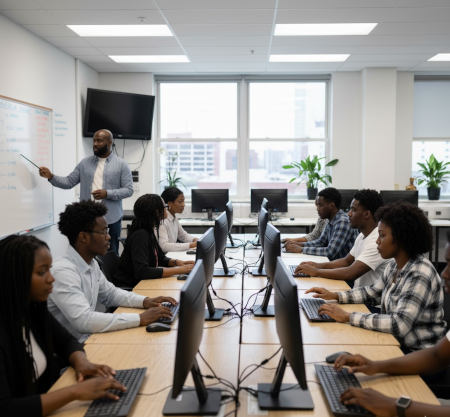
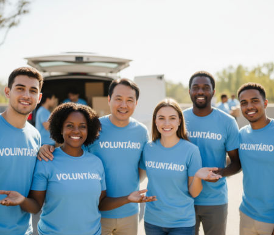

Inclusão Digital

Temos oficina de informática, aberta todas as terças, quintas e sábados, com aulas gratuitas aberta a comunidade para inclusão digital de jovens e adultos.
Ver detalhes do projeto e doaçãoAjudando desde 1989 a inserir o jovem periférico ao mercado de trabalho.

Temos oficina de informática, aberta todas as terças, quintas e sábados, com aulas gratuitas aberta a comunidade para inclusão digital de jovens e adultos.
Ver detalhes do projeto e doação
Programa de encaminhamento dos nossos jovens e adultos ao mercado de trabalho através das empresas que fazem parte do nosso projeto.
Acesse nossas vagas e/ou cadastre sua empresa conosco.Temos um planejamento de carreira com os nossos colaboradores do projeto.
Saiba mais sobre as oportunidades e cadastre-se.Faça uma doação e acompanhe o relatório de transparência
Doe aqui.